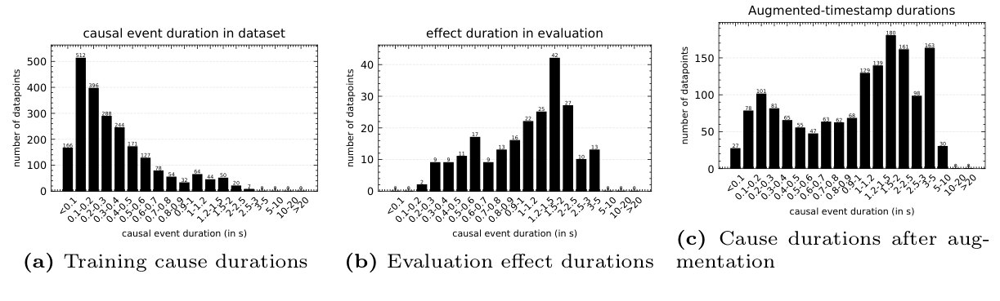
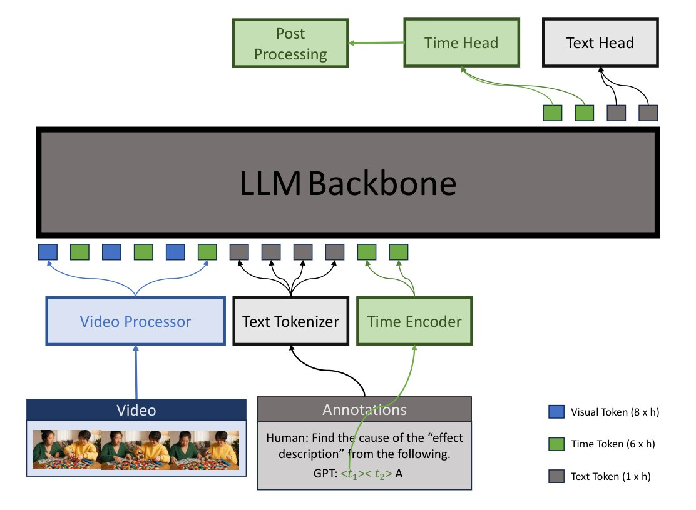
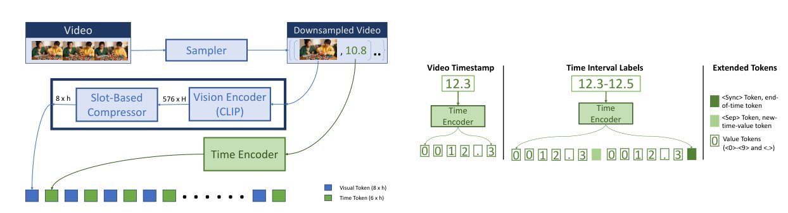
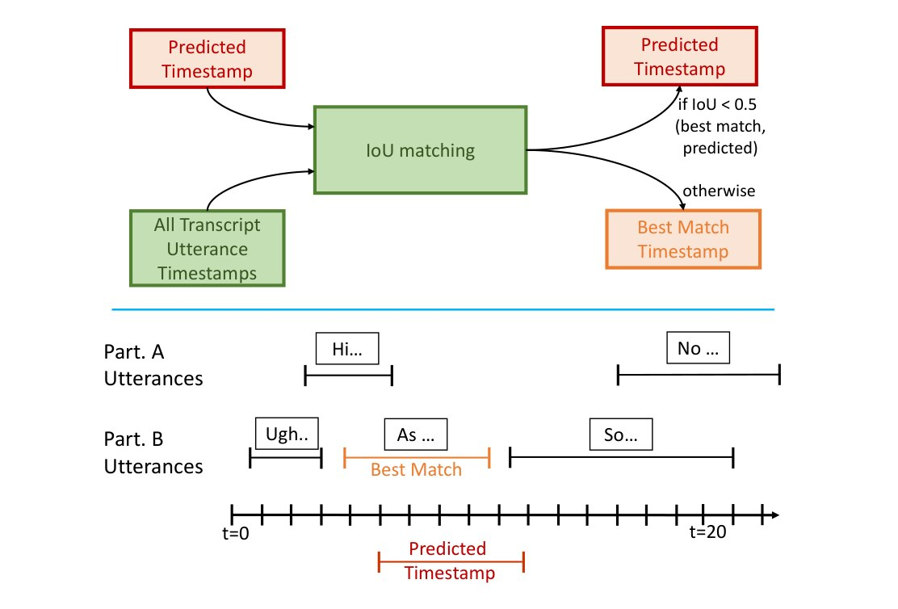
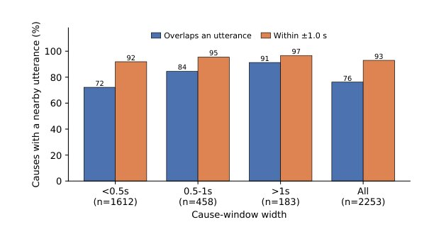

CUES: Causal Understanding of Events in Dyadic Interaction via Dialog-and-Vision Signals
Why did that happen, and when? A single-pass multimodal LLM that picks the cause of an event in a conversation and localizes it in time.
1 Samsung Research India Bangalore · 2 Indian Institute of Science · 3 Indian Institute of Technology Kharagpur
★ Work done during an internship at Samsung Research India Bangalore
- Joint 1stTrack 5: Multimodal Exocentric Causal Event Grounding
- 93.2%cause-selection accuracy on the leaderboard
- 40.2%temporal accuracy on the leaderboard
Abstract
We address causal event grounding in dyadic human interaction: given an effect event and a set of candidate causes, jointly identify the correct cause and localize its timestamp in an untrimmed exocentric video. We approach this with causal event modeling, fine-tuning a temporally-grounded multimodal LLM to emit the selected cause and its time window in a single autoregressive pass. Guided by an analysis of the data, we introduce an effect-centric frame sampler that concentrates the frame budget where causes occur, and a distribution-matched augmentation that aligns training cause-window widths with the wider effect windows seen at evaluation; a transcript-snapping step further refines the predicted timestamp. This system placed joint first in the causal event grounding track of the ChaLearn UDIVA-HHOI challenge at the ECCV 2026 CONTEXTUS workshop, with 93.2% cause-selection accuracy and 40.2% temporal accuracy. Our analysis further reveals that causes decompose into a verbal-anchored majority (~76% co-occur with a transcript utterance) and a visually-grounded silent minority. Motivated by this, we investigate transcript conditioning, an alternative that injects time-encoded transcript utterances as an input modality. It improves localization exactly on the verbal-anchored causes (a ~4× gap between causes that do and do not overlap an utterance), though it does not surpass the distribution-matched submission on the leaderboard. We discuss this verbal-visual decomposition as a promising direction for causal understanding of human interaction.
The task, and why it is hard
In a video of two people interacting, a participant’s action is rarely self-contained: it is a response to what the other person just did or said. Given an effect event and five candidate causes, the model must pick the right cause and say when it happened.
- Sub-second causes. Causes are very brief, so localization must be precise to a fraction of a second.
- A train/evaluation width gap. Effect windows at evaluation are much wider than the cause windows seen in training.
- Cause versus co-occurrence. A true cause has to be told apart from events that are merely nearby in time or visually correlated.

Method: causal event modeling in one pass
We fine-tune a temporally grounded video LLM (TRACE) so that one autoregressive pass produces both the time window and the chosen cause. The model first predicts the time, then the cause option conditioned on that time. Its inputs are video frames, the effect description and the five candidate causes.

Effect-centric frame sampling
Causes cluster just before the effect, so we spend the frame budget there: 128 frames per clip, made of 108 frames sampled exponentially backward from the effect start, 15 frames over the effect itself, and 5 frames after it. Each frame is compressed to 8 visual tokens and tagged with an explicit timestamp encoded as 6 time tokens.

Width-matched augmentation
Since evaluation effect windows are wider than the training cause windows, and cause and effect durations follow a similar distribution, we widen the training cause windows so the two distributions match.
Using the transcript
Dialogue gives a strong temporal anchor, so we use it in two ways.
- Transcript snapping (submitted). A post-processing step: if the predicted window overlaps a transcript utterance with IoU above 0.5, we replace it with that utterance’s midpoint. Otherwise we keep the model’s window.
- Transcript conditioning (alternative). Each utterance is fed in as an input, its time tokens followed by its text, so the dialogue shapes the prediction itself.

Results
Cause selection is close to saturated at 82-89% on the development set, so the hard part is temporal localization, especially for the shortest causes. We first picked a backbone by evaluating the pre-trained TRACE variants without fine-tuning; TRACE-Uni was strongest.
| Model | MC accuracy (%) |
|---|---|
| TRACE-Stage2 | 17 |
| TRACE-Uni | 33 |
| TRACE-Charades | 18 |
| TRACE-Retrieval | 25 |
| TRACE-Youcook2 | 16 |
Ablations on the development set
Width-matched augmentation helps most on wider causes (over 1 s: 51.8 to 59.2 temporal accuracy). An auxiliary regression loss did not improve over plain token prediction, so it isn’t used.
| Model | MC (all) | Temp (all) | MC (>0.5 s) | Temp (>0.5 s) | MC (>1 s) | Temp (>1 s) |
|---|---|---|---|---|---|---|
| Vanilla fine-tune | 87.8 | 12.9 | 82.4 | 32.9 | 96.3 | 51.8 |
| With augmentation | 89.4 | 12.1 | 84.6 | 35.1 | 92.6 | 59.2 |
| With aux. regression loss | 82.4 | 13.6 | 79.1 | 34.0 | 96.3 | 55.5 |
Snapping versus conditioning
Transcript conditioning helps where expected, but the submitted system, which has the augmentation, did better on the leaderboard. The conditioning model was built close to the deadline, so combining the two is future work. Validation numbers use different development splits, so compare the leaderboard columns.
| Model | Val MC | Val Temp | Leaderboard MC | Leaderboard Temp |
|---|---|---|---|---|
| Transcript conditioning | 90.8 | 14.8 | 91.9 | 34.2 |
| Transcript snapping (submitted) | 89.4 | 12.9 | 93.2 | 40.2 |
Finding: causes are verbal or visual
About 76% of causes overlap a dialogue utterance (93% within one second), and that share rises with cause width, from 72% for sub-second causes to 91% for causes over a second. The other ~24% are silent, such as gaze shifts or object manipulation, and can only be grounded from vision.

Splitting the development causes by overlap shows where the transcript helps. The conditioning model is about 4× more accurate on causes that overlap an utterance than on those that do not.
| Cause group | Overall | >0.5 s | >1 s |
|---|---|---|---|
| Overlaps an utterance | 20.9% (44/211) | 50.0% (33/66) | 59.0% (23/39) |
| No overlapping utterance | 4.8% (6/126) | 11.1% (2/18) | 0.0% (0/4) |
Dialogue timing is a strong anchor for the verbal majority, while the silent minority must still be grounded visually. Combining both is a promising direction for causal understanding of human interaction.
BibTeX
@inproceedings{swami2026cues,
title = {CUES: Causal Understanding of Events in Dyadic Interaction via Dialog-and-Vision Signals},
author = {Swami, Kunal and Deshmukh, Aditya and Das, Abir},
booktitle = {European Conference on Computer Vision (ECCV) Workshops},
year = {2026},
note = {ChaLearn UDIVA-HHOI Challenge, CONTEXTUS Workshop}
}